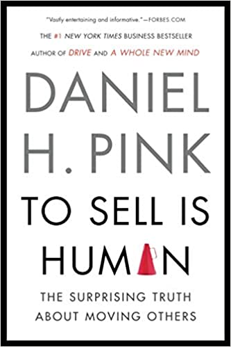
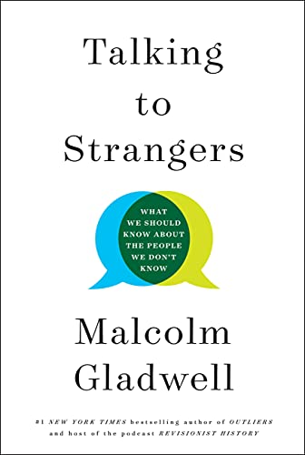
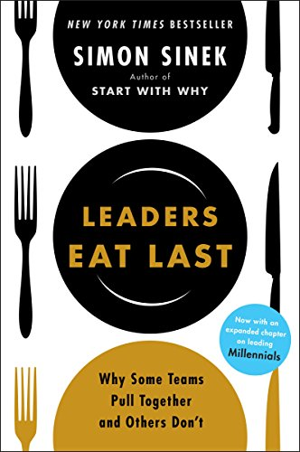

Non-Fiction
The School Of Life
A quality read with plenty of useful take-aways. Things we should’ve been taught in school. The writing style is plain and clear with a focus on reason, clarity, and philosophy. But it's not stuffy, everything feels clear and easy to digest. It does a great job of exploring common sense that is not always so common.
To Sell Is Human
This book added another layer to how I see the world. It's argument is that humans sell all the time, and not just in goods and services but throughout all aspects of life. It does a good job of explaining economic concepts throught the lens of psychology.
Talking to Strangers
"We think we can easily see into the hearts of others based on the flimsiest of clues." This book challenges our systemic social ideologies using quality research and engaging anecdotes. I appreciate its meta-analysis of some of humanities most complex social issues.
Leaders Eat Last
A needed discussion that is worth reading regardless of one's position of authority. It explores the dangers of thinking all interactions are zero-sum, and shows the benefits of encouraging equality and respect at all levels of a team - and with people in general - beginning at the top.

Rich Dad Poor Dad
“There is a difference between being poor and being broke. Broke is temporary. Poor is eternal.” This book has changed my perspective on the relation between money and work. As an added bonus it's written as a series of stories which makes it relatable and much easier to digest.